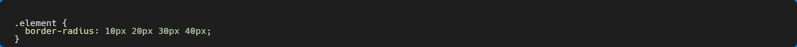

Pendahuluan
Apa itu CSS3? CSS3 adalah generasi ke-3 dari spesifikasi CSS yang direkomendasikan oleh W3C. Untuk selebihnya bisa dilihat disini.
Kenapa harus CSS3?
- Membuat website menjadi lebih fleksibel
- Membuat mock-up dengan cepat tanpa bantuan bahasa scripting
- Mengurangi penggunaan gambar
- Penggunaan selector untuk menghindari penggunaan markup yang boros
Border Radius
Border radius adalah fitur CSS yang memungkinkan Kita untuk mengatur radius sudut pada border elemen HTML. Ini berarti kita dapat mengubah sudut kotak border menjadi bulat atau memiliki sudut yang lebih halus.
yang harus kita lakukan hanyalah dengan menambahkan properti border radius pada elemen html.
pada contoh diatas yang kita lakukan adalah untuk mengatur border radius pada semua sudut.Jika kita ingin mengaturnya pada sudut tertentu, kita bisa gunakan properti seperti dibawah ini.
Kita juga bisa mengatur border radius pada semua sudut secara individual dengan menggunakan empat nilai, yang masing-masing mewakili radius sudut atas kiri, atas kanan, bawah kanan, dan bawah kiri.

Opacity
Opacity adalah properti CSS yang memungkinkan Kita mengatur tingkat ketransparanan elemen HTML.Nilai opacity berkisar antara 0 (elemen sepenuhnya transparan) hingga 1 (tidak transparansi sama sekali).
RGBa & HSLa
RGBa adalah format warna yang menggabungkan warna RGB (Red, Green, Blue) dengan alpha channel yang menentukan tingkat transparansi. Alpha channel berkisar dari 0 (transparan) hingga 1 (tidak transparan), dengan nilai di antara 0 dan 1 menyatakan tingkat transparansi yang lebih rendah.
HSLa adalah format warna yang menggabungkan warna HSL (Hue, Saturation, Lightness) dengan alpha channel.Dalam HSL, hue diwakili oleh sebuah angka dari 0 hingga 360, dengan angka 0 merujuk pada merah, angka 120 merujuk pada hijau, dan angka 240 merujuk pada biru. Saturation dan lightness diwakili oleh angka dari 0 hingga 100, dengan angka 0 merujuk pada tingkat minimum dan angka 100 merujuk pada tingkat maksimum. alpha channel menentukan tingkat transparansi. Alpha channel berkisar dari 0 (transparan) hingga 1 (tidak transparan), dengan nilai di antara 0 dan 1 menyatakan tingkat transparansi yang lebih rendah.
Perbedaan utama antara RGBa dan HSLa adalah cara mereka menyatakan warna. RGBa menyatakan warna dengan menggunakan nilai merah, hijau, dan biru, sementara HSLa menyatakan warna dengan menggunakan nilai hue (warna), saturation (kepekatan warna), dan lightness (kecerahan).
Box Shadow
Box shadow adalah fitur CSS yang memungkinkan Kita menambahkan bayangan pada elemen HTML. Ini dapat digunakan untuk memberikan kesan ketinggian atau kedalaman pada elemen, atau hanya sebagai efek estetika.
Untuk menambahkan box shadow pada elemen, gunakan properti "box-shadow":
Nilai "box-shadow" terdiri dari enam bagian:
- Offset-x: jarak shadow ke kanan atau ke kiri dari elemen (dalam piksel atau unit lain).
- Offset-y: jarak shadow ke atas atau ke bawah dari elemen (dalam piksel atau unit lain).
- Blur-radius: tingkat keburaman shadow (dalam piksel atau unit lain).
- Spread-radius: tingkat penyebaran shadow (dalam piksel atau unit lain).
- Color: warna shadow (dalam format warna CSS seperti RGBa atau HSLa).
- Inset (opsional): jika diatur ke "inset", shadow akan ditampilkan di dalam elemen sebagai bayangan dalam.
Text Shadow
Text shadow adalah fitur CSS yang memungkinkan Kita menambahkan bayangan pada teks. Ini dapat digunakan untuk memberikan kesan ketinggian atau kedalaman pada teks, atau hanya sebagai efek estetika.
Untuk menambahkan text shadow pada teks, gunakan properti "text-shadow":
Nilai Teks shadow hanya berisi Offset-x, Offset-y, Blur-radius & Color.
Gradient (Gradasi)
Pertama-tama Gradient adalah value(nilai) untuk "background-image" dan bukan properti CSS3.
Linear Gradient
Linear gradient adalah efek gradien yang dibuat dengan mengikuti garis lurus. Ini bisa digunakan untuk memberikan kesan transisi warna yang lembut pada elemen HTML.
Untuk menambahkan linear gradient pada elemen HTML, gunakan properti "background-image" dan tentukan nilai "linear-gradient":
Properti "linear-gradient" memiliki dua atau lebih nilai warna yang ditentukan, yang akan diatur secara bertahap. Kita juga bisa merubah arahnya menggunakan "to" seperti "to bottom, to top, to left & to right" bisa juga seperti ini "to left top, to left bottom, to right top & to right bottom.Kita juga bisa menggunakan "deg".
Color stop adalah fitur CSS yang memungkinkan Kita menentukan titik-titik di mana gradient warna akan berubah. Ini bisa digunakan untuk menciptakan efek gradien yang lebih halus dan teratur.
Untuk menambahkan color stop pada linear gradient, tambahkan tKita titik setelah setiap warna dan tentukan nilai "stop" (dalam persen atau unit lain) di mana gradient akan berubah:
Radial Gradient
Radial gradient adalah efek gradien yang dibuat dengan mengikuti garis melingkar dari titik pusat. Ini bisa digunakan untuk memberikan kesan transisi warna yang lembut pada elemen HTML.
Untuk menambahkan radial gradient pada elemen HTML, gunakan properti "background-image" dan tentukan nilai "radial-gradient":
Kita juga bisa menentukan jangkauan dari radial gradient tersebut.
Kita dapat menentukan posisi titik pusat radial gradient dengan menggunakan atribut "at".

Font Face
Font Face adalah fitur pada CSS3 yang memungkinkan Kita menambahkan font yang berbeda pada sebuah website. Fitur ini sangat bermanfaat bagi Kita yang ingin menggunakan font yang tidak tersedia pada komputer pengunjung website.
Untuk menambahkan font yang berbeda pada website, Kita bisa menggunakan kode seperti ini:
Penjelasan untuk format-format tersebut
- .ttf (TrueType Font) adalah format font yang dikembangkan oleh Apple dan Microsoft pada tahun 1991. Format ini merupakan format font yang paling umum digunakan, dan bisa digunakan pada hampir semua sistem operasi dan browser.
- .otf (OpenType Font) adalah format font yang dikembangkan oleh Adobe dan Microsoft pada tahun 1996. Format ini mirip dengan .ttf, namun memiliki fitur tambahan seperti support untuk karakter non-Latin, kerning otomatis, dan tabel karakter yang lebih besar.
- .woff (Web Open Font Format) adalah format font yang dikembangkan oleh Mozilla Foundation pada tahun 2010. Format ini merupakan format font yang sangat umum digunakan pada website, karena didukung oleh hampir semua browser modern.
- .woff2 (Web Open Font Format 2) adalah versi terbaru dari .woff, yang memiliki ukuran file yang lebih kecil dan kecepatan rendering yang lebih tinggi.
- .eot (Embedded OpenType) adalah format font yang hanya didukung oleh Internet Explorer. Format ini biasanya digunakan pada website yang ingin menggunakan font yang hanya tersedia pada komputer pengembang website.
- .svg (Scalable Vector Graphics) adalah format file yang digunakan untuk menyimpan gambar vektor. Format ini memiliki ukuran file yang kecil dan bisa diperbesar tanpa kehilangan kualitas gambar, sehingga sering digunakan pada website untuk menyimpan logo atau ikon.
Vendor Prefixes
Vendor prefixes adalah awalan atau prefiks yang ditambahkan ke properti CSS untuk menunjukkan bahwa properti tersebut merupakan fitur eksperimental atau belum stabil. Vendor prefixes biasanya digunakan oleh browser untuk menguji fitur baru sebelum fitur tersebut resmi diimplementasikan pada browser tersebut.
Untuk properti yang memerlukan vendor prefixes bisa dicek pada website pleeease.iamvdo.me & caniuse.com .
Filter
Filter adalah fitur pada CSS yang memungkinkan kita mengubah tampilan elemen HTML dengan menambahkan efek seperti blur, brightness, contrast, grayscale, dan sebagainya. Kita bisa menggunakan filter pada elemen HTML dengan menambahkan properti 'filter' seperti ini:
Untuk penjelasan lebih lanjut bisa dicek disini.
Transform
Transform adalah fitur pada CSS yang memungkinkan kita memanipulasi format visual dari elemen HTML. Kita bisa menggunakan transform pada elemen HTML dengan menambahkan properti 'transform' seperti ini:
Transition
Transition adalah fitur pada CSS yang memungkinkan kita mengubah nilai dari properti HTML secara halus. Kita bisa menggunakan transition pada elemen HTML dengan menambahkan properti 'transition' seperti ini:
Animation
CSS Animation adalah fitur pada CSS yang memungkinkan Anda menambahkan animasi pada elemen HTML. Dengan menggunakan CSS Animation, Anda bisa membuat elemen HTML bergerak atau berubah tampilan secara berkala sesuai dengan aturan yang ditentukan.